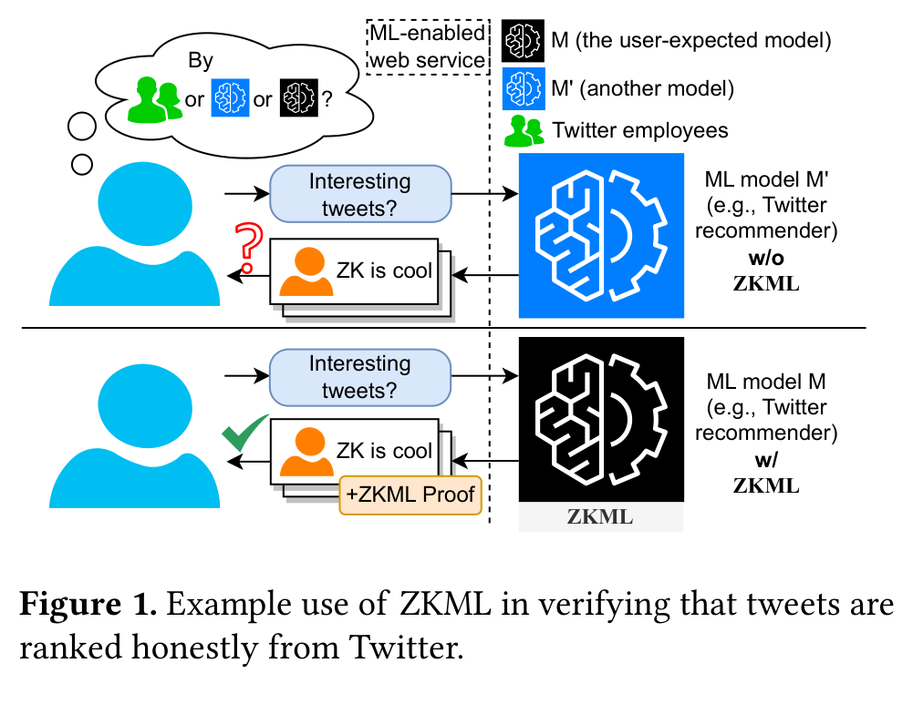
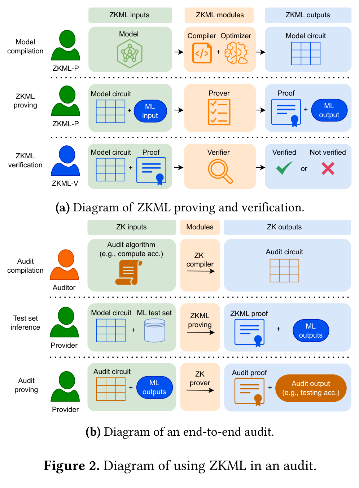
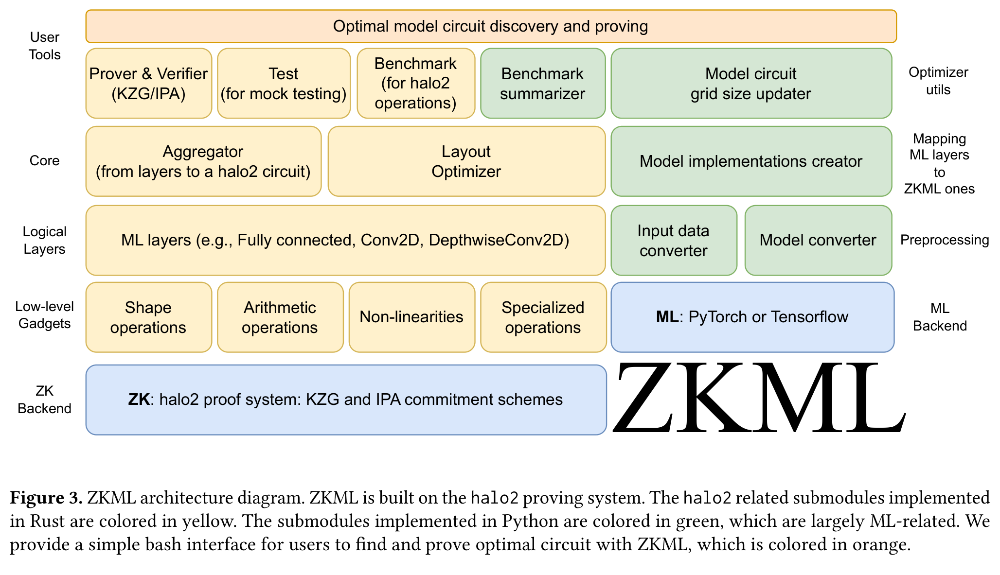
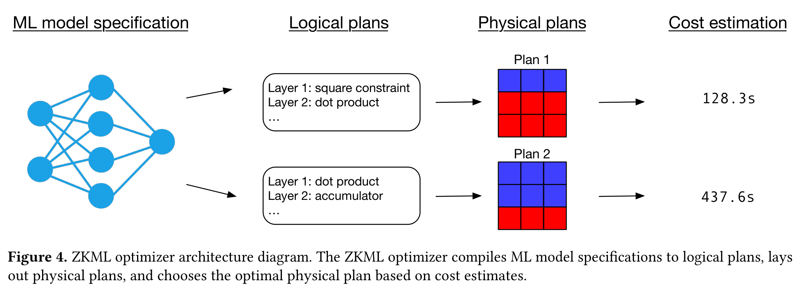

研究動機
問題背景
機器學習模型越來越多地被部署在封閉系統後面，用戶無法驗證模型是否按照宣稱的方式運作：
- 社群媒體推薦系統影響資訊流
- 醫療診斷 AI 影響重大決策
- 信用評分模型決定貸款審批
核心矛盾
用戶需求：透明度與可驗證性
企業顧慮：隱私、商業機密（GPT-4 訓練成本 > $100M）

ZKML 的核心價值
把「相信平台」改成「驗證平台」
平台每次給你結果時，也給你一個 proof，證明輸出確實來自承諾的模型
ZKML 不證明什麼
- 不保證模型是「好的」或「公平的」
- 只保證「平台沒有在計算過程上說謊」
應用場景
ZKML 的核心技術可應用於多種需要「可驗證計算」的場景：
1. Trustless Audits（無需信任的審計）
問題：ML 模型訓練於私人數據（如推薦系統），用戶無法驗證模型是否如宣稱運作。
解法：模型提供者 commit 到固定模型，每次輸出附帶 ZK proof。結合 verified databases 可實現端到端審計。
範例：Twitter 推薦算法、OpenAI 的商業模型（gpt-3.5-turbo, gpt-4）
2. Private Biometric Authentication（隱私生物辨識）
問題：線上服務需要確認用戶是真人，但現有生物辨識方案侵犯隱私。
解法：結合 attested sensors（帶數位簽章的感測器），用戶拍照後在本地執行人臉比對 ML 模型，產生 ZK proof 證明比對成功，但不洩露照片或生物特徵。
3. Trustless Credit Scores（可驗證信用評分）
問題：區塊鏈上的 undercollateralized loans 需要信用評分，但傳統信用機構不適用。
解法：從用戶的 on-chain history 計算信用分數，使用 ZK-SNARK 證明評分是由承諾的 ML 模型誠實計算。借貸雙方都能驗證評分未被篡改。
共同特性
以上應用都需要結合其他技術（verified databases、attested sensors）才能實現端到端安全。ZKML 專注於「ML inference 的可驗證性」這一環。
技術背景
ZKML 證明與驗證流程

模型 → 電路
輸入 + 電路 → Proof
驗證 Proof 有效性
halo2 電路表示
ZKML 使用 halo2 作為底層證明系統，電路被表示為 2D Grid：
三種約束類型
- 多項式約束：特定多項式必須等於零
- 複製約束：兩個 cell 值必須相等
- 查表約束：值必須存在於預定義表中
關鍵限制
Rows 必須是 2k
這個限制讓全域優化變得非常重要 — 多用一點 row 可能導致成本翻倍
關鍵發現：為什麼同一運算有多種表示法？
同一運算，選錯實現方式，效能可能差 24 倍！
最佳方案取決於全域電路配置，不是單一運算的局部最佳
ReLU 範例：兩種實現方式的 Trade-off
方法一：位元分解
- 把 x 展開成多個 bit，檢查符號位
- 需要 b+2 個 cell（b = 位寬）
- 不需要 lookup table
方法二：Lookup Table
- 直接建表存所有 x → ReLU(x)
- 電路內只需 很少 cell
- 但表很大（2b 行）
哪個比較快？不是固定的。取決於：做多少次 ReLU、整體電路的 row/col 配置。只做 1 次 ReLU 時 lookup 可能更貴；做 218 次時 lookup 可能更省。
ZKML 系統架構

五層架構說明
| 層級 | 功能 | 實現 |
|---|---|---|
| User Tools | 提供友善的 bash 介面 | Prover, Verifier, Benchmark 工具 |
| Core | 電路生成與佈局優化 | Aggregator, Layout Optimizer |
| Logical Layers | ML 層抽象 | Fully Connected, Conv2D, Softmax... |
| Low-level Gadgets | 基礎運算電路 | Shape, Arithmetic, Non-linearities |
| ZK Backend | 零知識證明系統 | halo2 + KZG/IPA commitment |
KZG vs IPA：兩種 Commitment Scheme
KZG Commitment
- Trusted Setup：需要一次性分散式設置（PSE 已完成 228，超過 75 位參與者）
- Proof Size：較小（O(1)）
- Verification：極快（single pairing check）
- 適用：對驗證速度要求高、可接受 trusted setup 的場景
IPA Commitment
- Transparent：無需 trusted setup
- Proof Size：較大（O(log n)）
- Verification：較慢（O(n) group operations）
- 適用：對去中心化要求高、不願依賴 trusted setup 的場景
Optimizer 流程

Optimizer 四階段
- ML Model Specification: 解析模型結構
- Logical Plans: 選擇 gadget 實現方式
- Physical Plans: 決定電路佈局（columns, rows）
- Cost Estimation: 估算證明時間，選擇最佳方案
Gadgets 設計
四大類 Gadgets
Free!
多種實現方式
Lookup table
Transformer 關鍵
Softmax 的突破
Softmax 是向量函數，無法直接用 lookup table（向量長度 n 需要 SFn 大小的表）。ZKML 將其分解為三個可驗證的 gadgets：
Numerical Stability Trick
直接計算 ex 容易 overflow。ZKML 使用標準技巧：先減去最大值
這樣所有 exponentials 的輸入都 ≤ 0，避免數值爆炸，同時結果不變（shift invariant）。
1. Maximum Gadget
找出最大值 c = max(a, b)
- (c-a)(c-b) = 0（c 等於 a 或 b）
- c-a ∈ [0, N)（c ≥ a）
- c-b ∈ [0, N)（c ≥ b）
2. Scaled Exp Gadget
計算 y = ex × SF
- 使用 lookup table
- SF = scale factor（避免精度損失）
3. Variable Division Gadget
處理 c = Round(b/a)，其中 a 是變數（非固定常數）
核心約束：b = c × a + r，其中 r 是餘數且 a - r ∈ [0, N)
Rounding 技巧：Round(b/a) = floor((2b + a) / 2a)，轉換為標準整數除法
矩陣乘法優化：Freivalds' Algorithm
問題：矩陣乘法 B = WA 需要 O(n³) 運算
解法：在電路外算好 B，電路內只驗證 Br = W(Ar)
效果：複雜度降到 O(n²)
安全性考量
隨機向量 r 不能讓 prover 先知道，必須在 commitment 之後產生，否則 prover 可以作弊。
Optimizer 詳解
為什麼 Optimizer 是核心？
2k 限制的殘酷現實
多用一點點 row → 從 2k 跳到 2k+1 → 成本可能接近翻倍
Optimizer 流程（Algorithm 1）
| 步驟 | 說明 |
|---|---|
| 1. BenchmarkOperations | 測量硬體上 FFT、MSM、lookup 建表時間（只需做一次） |
| 2. GenerateLogicalLayouts | 產生候選的邏輯布局（每層用哪種 gadget） |
| 3. GeneratePhysicalLayout | 決定實際的 columns 數量 |
| 4. FindOptimalK | 找最適合的 k 使得 rows = 2k |
| 5. EstimateCost | 用成本模型估算 proving time，選最低成本方案 |
Heuristic Pruning 策略
候選空間可能爆炸，ZKML 使用啟發式剪枝：傾向讓同類 layer 使用同一種實作，因為新增 constraint 的固定成本往往比新增 column 更貴。
Row-exact Simulator：為什麼「精準」很重要？
因為 rows 有 2k 門檻。估錯一點點 → 以為在 220 以內 → 實際超出 → 被迫跳到 221 → 成本翻倍
所以 row-exact simulation（精準計算實際 row 數）是 optimizer 能做對決策的核心。
成本模型
Proving time 主要來源：FFT + MSM + lookup 建表 + field operations
重點不是算到毫秒，而是排序要準：誰比較快，成本模型要能排得出來。
多目標優化
Optimizer 可切換目標：最短 proving time vs 最小 proof size
對區塊鏈場景很重要：鏈上儲存很貴，可能願意證明慢一點換 proof 小一點。
實驗結果
支援的模型（Table 5）
188.9M FLOPs
96.2M FLOPs
22.9B FLOPs
(CIFAR-10)
實驗硬體環境
所有數據測量於 AWS EC2 r6i 系列：
- r6i.8xlarge：32 vCPU、256 GB RAM（大多數模型）
- r6i.16xlarge：64 vCPU、512 GB RAM（MobileNet）
- r6i.32xlarge：128 vCPU、1 TB RAM（GPT-2、Diffusion）
端到端效能 — KZG 後端（Table 6）
| 模型 | Proving Time | Verification Time | Proof Size |
|---|---|---|---|
| MNIST | 2.45s | 6.69ms | 6,560 bytes |
| ResNet-18 | 52.9s | 11.84ms | 15,744 bytes |
| VGG16 | 637.14s (~11min) | 9.62ms | 12,064 bytes |
| MobileNet | 1,225.5s (~20min) | 17.67ms | 17,664 bytes |
| 358.7s (~6min) | 22.41ms | 6,816 bytes | |
| Diffusion | 3,600.57s (~60min) | 92.78ms | 28,704 bytes |
| GPT-2 | 3,651.67s (~61min) | 18.70s | 28,128 bytes |
端到端效能 — IPA 後端（Table 7）
| 模型 | Proving Time | Verification Time | Proof Size |
|---|---|---|---|
| MNIST | 2.36s | 22.26ms | 7,680 bytes |
| ResNet-18 | 46.5s | 0.20s | 17,120 bytes |
| VGG16 | 619.4s | 2.49s | 17,184 bytes |
| 364.9s | 2.28s | 8,448 bytes | |
| GPT-2 | 3,949.60s | 11.98s | 16,512 bytes |
關鍵觀察
- Proving 很貴：從 2.5 秒（MNIST）到約 1 小時（GPT-2）
- Verification 通常便宜（KZG 下多數模型為毫秒級），但 GPT-2 例外達 18.70 秒；IPA 後端多模型驗證時間達秒級
- Proof size 約 6-28 KB（極度壓縮）
量化後準確率（Table 8）
ZKML 使用 fixed-point quantization 將浮點運算轉為有限域運算。關鍵問題：準確率會掉多少？
| 模型 | FP32 準確率 | ZKML 準確率 | 差異 |
|---|---|---|---|
| MNIST | 99.06% | 99.06% | 0% |
| VGG16 | 90.36% | 90.37% | +0.01% |
| ResNet-18 | 91.88% | 91.87% | -0.01% |
結論：準確率損失不超過 0.01%，遠低於一般量化方法的 0.1% 門檻（差 20 倍）。ZKML 的 fixed-point 表示不會顯著影響模型品質。
與先前工作比較 — CIFAR-10（Table 9）
| 系統 | Accuracy | Proving Time | Verify Time | Proof Size |
|---|---|---|---|---|
| zkCNN | 90.3% | 88.3s | 59ms | 341 kB |
| vCNN | 90.4%* | 31 hours* | 20 seconds | 0.34 kB |
| ZKML (ResNet-18) | 91.9% | 52.9s | 12ms | 15.3 kB |
| ZKML (VGG-16) | 90.4% | 584.1s | 16ms | 12.1 kB |
* vCNN 的 proving time 由 zkCNN 論文估算；accuracy 為浮點精度估計值
(59ms → 12ms)
(341kB → 15.3kB)
(vs zkCNN)
消融實驗
Optimizer vs Fixed Configuration（Table 10）
比較 ZKML optimizer 選擇的最佳配置 vs 固定 40 columns 配置：
| 模型 | ZKML (優化) | Fixed Config | 改善幅度 |
|---|---|---|---|
| MNIST | 2.5s | 4.4s | +76% |
| DLRM | 34.4s | 42.4s | +23% |
| ResNet-18 | 52.9s | 74.8s | +41% |
| 358.7s | 464.0s | +29% | |
| VGG16 | 637.1s | 1,474.0s | +131% |
| MobileNet | 1,225.5s | 2,407.8s | +96% |
| Diffusion | 3,600.6s | 4,989.7s | +39% |
| GPT-2 | 3,651.7s | 5,952.0s | +63% |
多樣化 Gadgets 的重要性（Table 11）
移除額外 gadget 實現後的模型層級退化（保留 optimizer）：
| 模型 | ZKML (完整) | 無額外 Gadgets | 退化倍數 |
|---|---|---|---|
| MNIST | 2.5s | 6.2s | 2.5× |
| DLRM | 34.4s | 859.5s | 24× |
| ResNet-18 | 52.9s | 812.6s | 15× |
關鍵發現：同一運算的不同 gadget 實現，選錯可能差到 24 倍！
Optimizer 本身的效率
ZKML 的 optimizer 使用 cost model 預測最佳配置，而非窮舉所有配置實際 benchmark。這能節省多少時間？
| 模型 | Optimizer 執行時間 | 窮舉 Benchmark 時間 | 加速倍數 |
|---|---|---|---|
| MNIST | 6.3s | 3,622s | 575× |
| GPT-2 | 185.3s | ~1,078,449s (估計) | 5,900× |
Cost Model 準確度：在 MNIST 上測量，optimizer 選出的配置確實是最佳配置。Kendall's rank correlation 達 0.89（KZG）和 0.88（IPA），證明 cost model 能準確排序不同配置的效能。
結論與限制
限制
記憶體瓶頸
GPT-2 需要 1TB RAM
不支援動態控制流
無 branching 或 variable-length loops
模型架構需公開
權重可私密，架構要公開
無形式化驗證
TensorFlow → 電路的等價性未證明
五個關鍵 Takeaways
- zkML 的難點是「能不能跑得動」 — halo2 理論上什麼都能表示，性能是現實瓶頸
- 同一運算的等價表示，選錯差 24 倍 — 編譯 + 最佳化比想像的重要
- Softmax 是 Transformer 的關鍵門檻 — ZKML 用三個 gadgets 解決
- Row 必須是 2k 讓全域布局選擇很關鍵 — Row-exact simulator 是成功關鍵
- 現階段仍非常吃硬體資源 — 離「大型 LLM 每次推論都出 proof」還有距離
核心貢獻
ZKML 把「可驗證 ML 推論」從「只能 demo 小 CNN」推進到「可以處理現實世界模型」